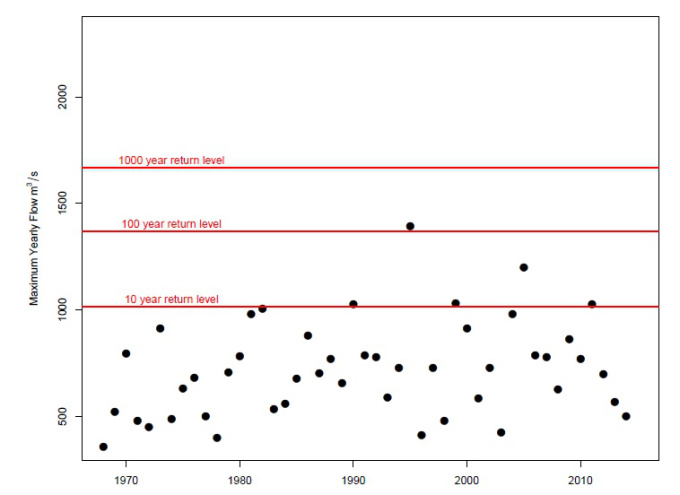

If you can’t guess from the title this post is about Extreme Value Theory (EVT). Last week I attended a talk from Professor Jonathan Tawn on some EVT applications and Jenny Wadsworth on some theory in multivariate EVT. I found it particularly interesting as unlike most methods of analysing data we don't really care about the data which isn't surprising, instead we focus on modelling the tail ends and unlikely observations. All graphics in this blog post are from Jon Tawn. Here I'll focus purely on uni-variate extreme value theory.
So what is Extreme Value Theory? It tries to answer the question of how rare is it to see an event that's this Extreme. This is applied in various ways, for example suppose you’re engineering a power station. Ideally you don't want this at any risk what so ever of flooding as water mixing with electricity won't end well as Lancaster locals know well (See picture below). However it's rare that there's zero chance of something happening so suppose city planners are happy as long as it's safe up to to. about a 1 in 1000 year event. This is where Extreme value theory comes in.
Application areas
We we're introduced to a example of comparing track runners over different times & distances. There's two applications of EVT in this area that I found very interesting; the first being that you can see inconsistencies in the data which may to due to foul play such as drug use; the second being that you can actually answer the question: how good was this athlete given that they came from this time and this event (i.e comparing an 800m track runner from 1981 to a 100m track runner from 2009).
The first problem that shows up with this is that the population of athletes is forever changing. This is due to the vast improvement in knowledge about training, diet and monitoring of the top athletes, meaning that the record holders today are actually at an advantage over the record holders in the past. However, we can model this trend of records and see that the records have a pattern, this is shown in (1). Extreme Value theory can then be used to see how likely such a record would have been. If it's almost impossible that this record occurred under normal circumstances then investigations into drug use can be conducted.
Other areas of application mentioned include weather forecasting such as the flood example above, Investigation into large insurance claims and risks in investments.
Methods
Here I'll give a quick overview of how to carry out an analysis on some data. So how do we go from data to this kind of analysis, There are two approaches that we introduced to univariate data, “Block Maxima/Minima” and “Threshold”. I'll focus on the Block Maxima approach as it makes sense for rain however there's multiple pros and cons to both methods. Block Maxima is illustrated below:
Taking the maximum in each year in a time series. We reduce our time-series of say 50 points each year for 20 years down to just 20 data points.
After we do this block maxima reduction to our dataset we have an asymptotic result kind of similar to the Central Limit Theorem referred to as “Extremal Types theorem”:
\[ X_1,X_2,...X_n \sim_{IID} F \text{ and } M_n=MAX(X_1,X_2,X_3,...X_n)\]
implies that
\[ M_n\sim GEV(\mu, \sigma, \epsilon)\]
is a good choice of distribution to model \(M_n\). After we've fit this model we can then check some percentage points of the distributions to estimate how rare events are shown in the plot below.
In the picture above we can see that our x year return level. events are fairly consistent with the data, 5/47 points above the 10 year line, 1/47 above the 1000 year line and the rest are below. 
One of the issues I found quite strange about this block maxima approach is the fact that you pick the block prior to the analysis. Above we just picked our block as the usual Jan-Dec calendar year, but suppose there was 1 in 1000 year high flow on a river that lasted 3 days if this happens on say the 31st of December then we're basically including two very similar and non-independent values in our GEV model which will no doubt ruin our parameter estimation as they will be highly influential points.
References
- Robinson, M., & Tawn, J. (1995). Statistics for Exceptional Athletics Records.Journal of the Royal Statistical Society. Series C (Applied Statistics),.44(4), 499-511. doi:10.2307/2986141